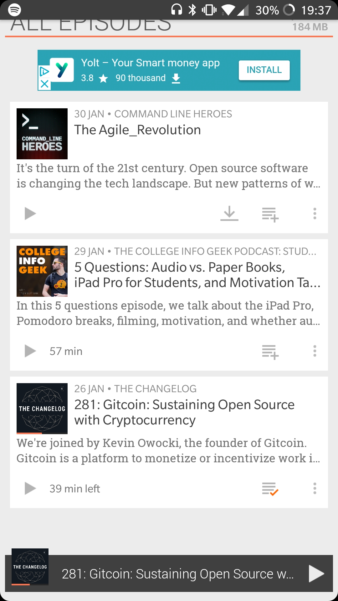

January Update
It's that time of the month (the end).
So it's 2018 now...
 The months are really passing fast. Like, in 4 months I will have finished my first year of college and then in a few months after that I'll be applying to Uni and Apprenticeships and all sorts. Anyway, January has been pretty tiring. Going back to college after what seemed like a super long Christmas holiday was pretty hard. Then as if it wasn't hard enough already to get back into routine I managed to catch the Aussie flu that was going round and that put me out for another week. I think I've only just got back into the swing of it now really and it's February already.
The months are really passing fast. Like, in 4 months I will have finished my first year of college and then in a few months after that I'll be applying to Uni and Apprenticeships and all sorts. Anyway, January has been pretty tiring. Going back to college after what seemed like a super long Christmas holiday was pretty hard. Then as if it wasn't hard enough already to get back into routine I managed to catch the Aussie flu that was going round and that put me out for another week. I think I've only just got back into the swing of it now really and it's February already.
College is still at full pace which is good and also I've started to organise myself a lot more and have created enough free time to program every day, start meal prepping and become even more productive. I've done this by getting a habit tracker app called Loopy. I chose this app because I wanted something simple that I could use to make myself accountable for keeping on top of the tasks that I've set myself.

Another habit I have started is listeneing to a podcast a day. I fit them in when travelling on the bus or driving to and from college and also sometimes when I wake up in the morning. Having another medium to discover new technology and to also learn more about personal and professional development has been really useful. I never thought I would enjoy listening to podcasts but I've actually found them really engaging and a powerful and actually quite relaxing way of learning and taking info in. I highly recommend Thomas Frank's podcast, the College Info Geek.
As I mentioned earlier I've started meal prepping which is something I've tried once before, for one week only and that was it. But this time I'm determined to keep going with it and improve my cooking skills until I actually really enjoy the food that I cook. Then prepping will become easy as it'll be much more rewarding to eat the finished product than it is now. Right now I'm just experimenting with the basic chicken, rice and veg but I do fancy something a bit more flavoursome so maybe I'll try something new next time.
As for programming, I've started looking into different technologies I may need for a rubik's cube solver if I were to make one as my second year project for college. To begin with I'm writing a simple image processing library called BildeTek (Bilde is image in Norweigian, don't ask why - I have no reason). The algorithms are actually a lot simpler than I thought they would be and the explanatory videos by Computerphile on YouTube have been really useful. Eventually I'd like to be able to live video processing however the processing times for my library at the moment are barely scraping 30fps at best in the simplest of processes. Hopefully soon, once I've implemented most of the image processing tools I'll need, I'll look at making them much more efficient and possibly will be able to use them in my project next year.
Finally, I'm now building a PC. For my project next year I'll need a Windows machine and although I can dual boot my Macbook with bootcamp, there simply isn't enough space for them to sit side-by-side on my 128GB drive. So I've bought a few parts and luckily managed to buy some great second hand parts off my friend which has saved me a huge amount and I can now make a nice desktop PC. I'll probably dual boot it with Windows and a Linux distro as I haven't been doing much Linux stuff lately and I do miss it.
Anyway, hope you enjoyed reading this month's update and I'll be back soon!